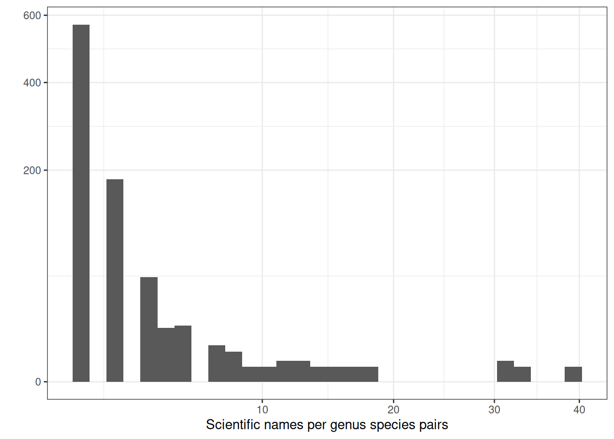

Code
taxo <- read_tsv("data/raw_data/raw_taxonomy.tsv") %>%
rename_all(tolower) %>%
filter(!(site %in% c(
"Kibale", "Lesong", "Moju", "Mbaiki", "Peteco",
"Misiones", "Ulu Muda", "Sg Lalang"
)))First we explored raw species data content. This corresponds to version 1.
We first removed Kibale, Lesong, Misiones, Mbaiki, Moju, Peteco, Sg Lalang, and Ulu Muda as taxonomic information is currently contained only either in the vernacular or scientifc column. They should be cleaned before integration.
taxo <- read_tsv("data/raw_data/raw_taxonomy.tsv") %>%
rename_all(tolower) %>%
filter(!(site %in% c(
"Kibale", "Lesong", "Moju", "Mbaiki", "Peteco",
"Misiones", "Ulu Muda", "Sg Lalang"
)))We had data for 8 sites:
taxo %>%
select(site) %>%
unique() %>%
summarise(sites = n()) %>%
kable(caption = "Total number of sites.")| sites |
|---|
| 8 |
We had a 43 to 69 families, with 101 to 256 genera, and with 130 to 762 species corresponding to 198 to 247 vernacular names when registered:
taxo %>%
group_by(site) %>%
summarise(
family = length(unique(na.omit(family))),
genus = length(unique(na.omit(genus))),
species = length(unique(paste(genus, species))),
scientific = length(unique(na.omit(scientificname))),
vernacular = length(unique(na.omit(vernname)))
) %>%
kable(caption = "Numbers per taxonomic levels for each site.")| site | family | genus | species | scientific | vernacular |
|---|---|---|---|---|---|
| Bafog | 58 | 196 | 258 | 385 | 211 |
| Kabo | 53 | 154 | 197 | 270 | 0 |
| Malinau | 68 | 174 | 324 | 670 | 0 |
| Manare | 50 | 142 | 212 | 276 | 197 |
| Montagne_Tortue | 50 | 153 | 217 | 298 | 201 |
| Paracou | 64 | 256 | 463 | 762 | 247 |
| Tene | 49 | 146 | 166 | 200 | 208 |
| Uppangala | 43 | 101 | 115 | 130 | 0 |
In total, we thus add 1,140 species before cleaning:
taxo %>%
summarise(
family = length(unique(na.omit(family))),
genus = length(unique(na.omit(genus))),
species = length(unique(paste(genus, species))),
scientific = length(unique(na.omit(scientificname))),
vernacular = length(unique(na.omit(vernname)))
) %>%
kable(format.args = list(big.mark = ","),
caption = "Total numbers per taxonomic levels.")| family | genus | species | scientific | vernacular |
|---|---|---|---|---|
| 133 | 637 | 1,140 | 2,121 | 506 |
Species name construction using genus and species should be preferred as the scientific name column increases diversity with only slight differences:
taxo %>%
mutate(species = paste(genus, species)) %>%
select(species, scientificname) %>%
unique() %>%
group_by(species) %>%
mutate(N = n()) %>%
ungroup() %>%
filter(N == 11) %>%
kable(caption = "Example of multiple scientific names for one species genus pair.")| species | scientificname | N |
|---|---|---|
| Shorea parvifolia | Shorea parvifolia Dyer | 11 |
| Shorea parvifolia | Shorea parvifolia Dyer ssp. parvifolia | 11 |
| Shorea parvifolia | Shorea parvifolia Dyer ssp.parvifolia | 11 |
| Shorea parvifolia | Shorea parvifolia Dyer ssp. velutina | 11 |
| Shorea parvifolia | Shorea parvifolia Dyer. | 11 |
| Shorea parvifolia | Shorea parvifolia Dter | 11 |
| Shorea parvifolia | Shorea parvifolia Dyer ssp. Parvifolia | 11 |
| Shorea parvifolia | Shorea parvifolia Warb. | 11 |
| Shorea parvifolia | Shorea parvifolia Dyer ssp parvifolia | 11 |
| Shorea parvifolia | Shorea parvifolia Dyr ssp parvifolia | 11 |
| Shorea parvifolia | Shorea parvifolia Dyr | 11 |
taxo %>%
mutate(species = paste(genus, species)) %>%
select(species, scientificname) %>%
unique() %>%
group_by(species) %>%
summarise(N = n()) %>%
filter(N > 1) %>%
ggplot(aes(N)) +
geom_histogram() +
theme_bw() +
scale_y_sqrt() +
scale_x_sqrt() +
xlab("Scientific names per genus species pairs") + ylab("")